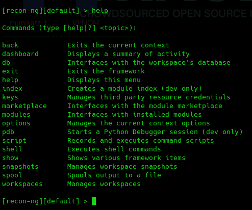
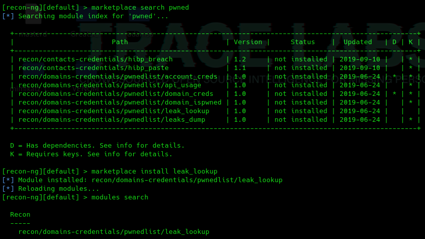
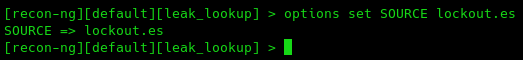

Recon-Ng
https://github.com/lanmaster53/recon-ng
Es una herramienta basada en una interfaz de consola a la que se van accediendo a diferentes módulos.
https://github.com/lanmaster53/recon-ng-marketplace
recon-ng

modules search

Vamos a instalar algunos.
marketplace search




Si pulsamos tab veremos diferentes opciones del módulo:


run